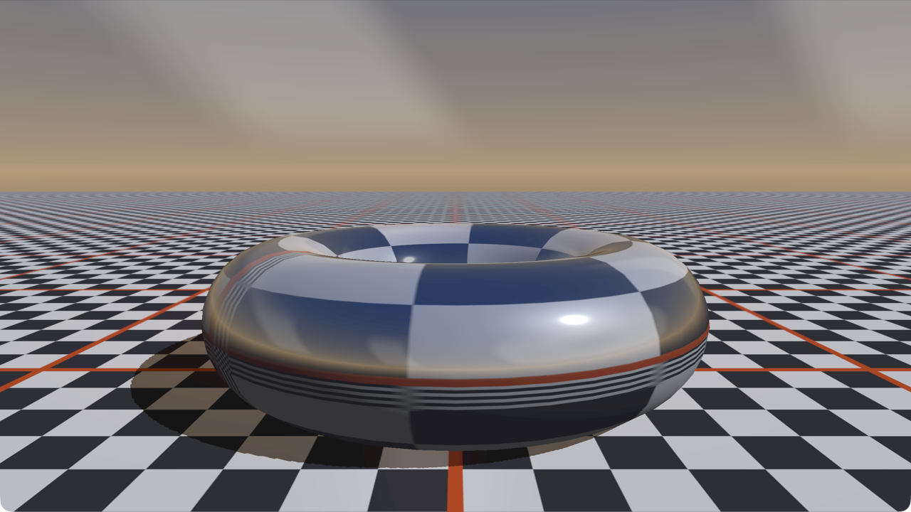
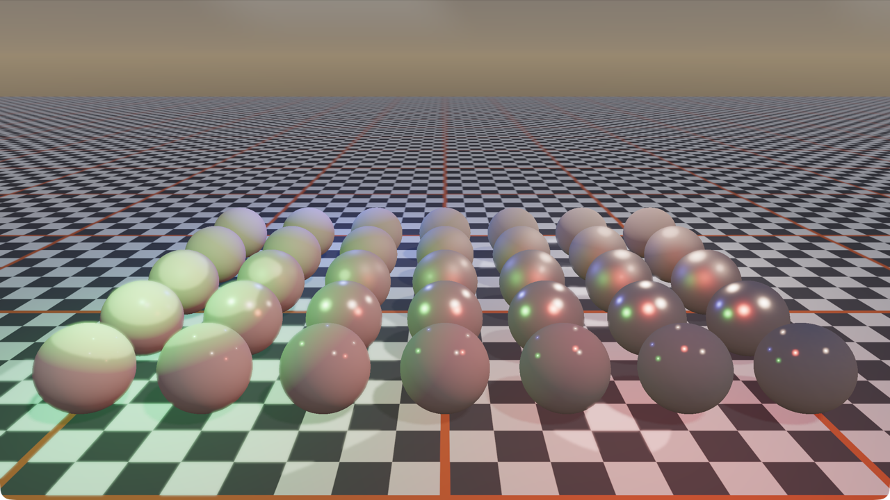

The desktop engine, ported to OpenGL ES.
RAII wrappers around every GL resource, a GLCall check on every call,
and thirteen small examples that each isolate one rendering technique — now running
on GLSL ES 3.00 through EGL.
What is inside
The same explicit ownership as the desktop build, with the porting notes that make ES differ.
RAII everywhere
Programs, buffers, VAOs, textures, cubemaps and framebuffers delete themselves. Copying is deleted, moving is enabled.
Checked calls
Every GL call goes through GLCall, which prints file:line call error code and breaks in Debug builds.
GLSL ES 3.00
Desktop-style shader sources are rewritten to #version 300 es with injected precision qualifiers at compile time.
Two backends
Switch between the real OpenGL ES backend and a headless Null backend at runtime, with per-frame draw statistics.
Thirteen examples
From a hardcoded triangle to a procedural rose, each example adds one capability without rewriting the previous one.
Headless tests
Camera math and OBJ parsing are unit-tested without a GL context, with a coverage floor enforced in CI.
Selected examples
Reference renders; the ES port reproduces them on Ubuntu 22.04 + Mesa llvmpipe with 4× MSAA from the EGL config.





Build in four commands
Requires CMake ≥ 3.16 and a C++17 compiler. GLFW and glm are fetched automatically.
Build, test and run
git clone https://github.com/UnmetDecade/Class-OpenGL-ES.git
cd Class-OpenGL-ES
cmake -S . -B build -DCMAKE_BUILD_TYPE=Debug
cmake --build build -j
ctest --test-dir build --output-on-failure
./build/13_rosePlatform notes
The examples run on Linux with EGL: install xorg-dev,
libgl1-mesa-dev, libegl1-mesa-dev and
libgles2-mesa-dev first. macOS builds the project and runs
the headless tests, but GLFW cannot create an OpenGL ES context there.
Documentation: README, architecture rules, changelog.